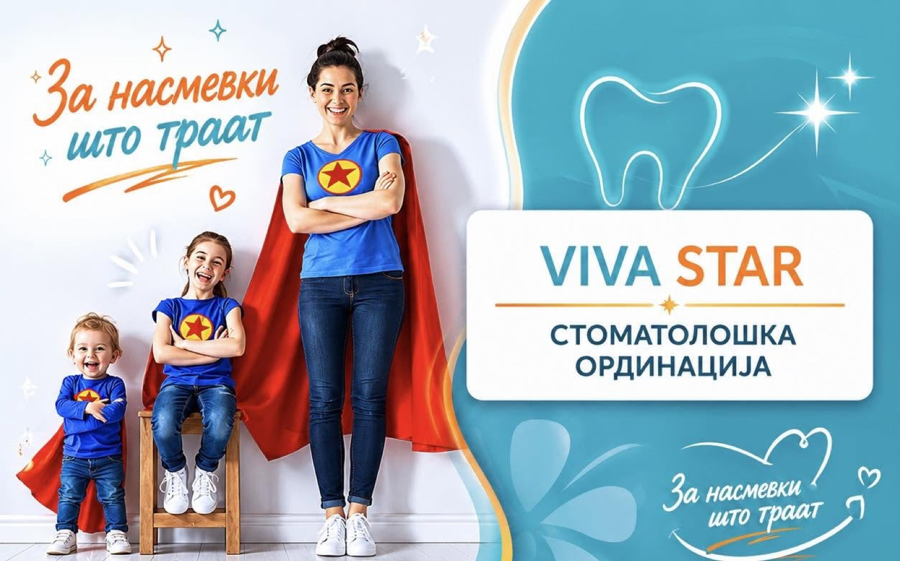
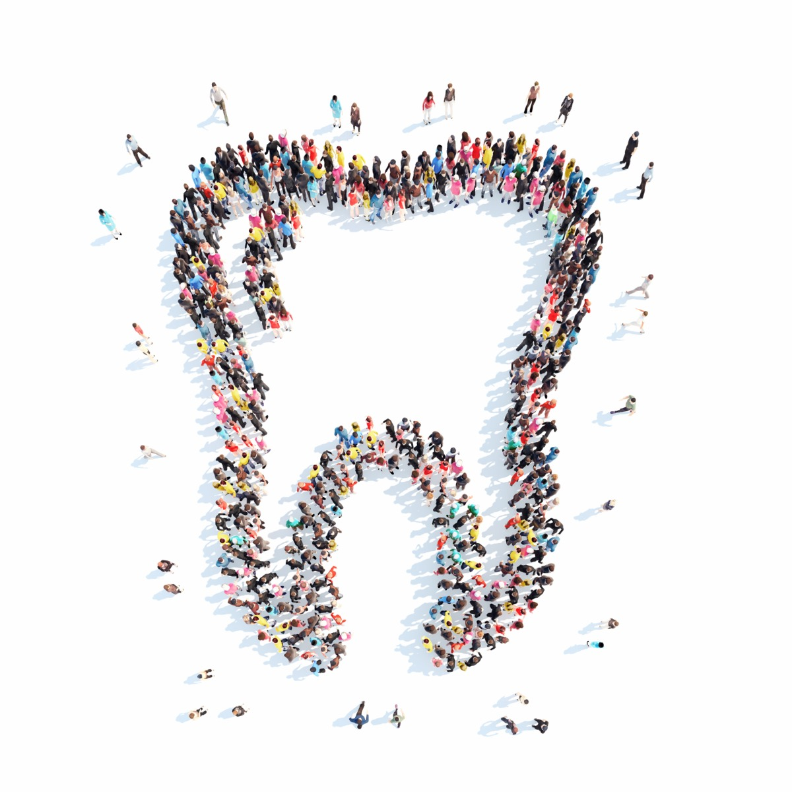

Прегледи и консултации
Редовни контроли, план на терапија и совети за орална хигиена за возрасни и деца.
Стоматолошка ординација · Кавадарци
Комплетна стоматолошка грижа на едно место: од редовен преглед и пломба до протетика, естетска стоматологија и дигитален рендген во самата ординација — без упатувања и чекање.
Сè што е добро почнува со насмевка.
Работно време: пон · вто · чет 09–17 ч · сре · пет 12–20 ч

Сè што работи една современа стоматолошка ординација — плус естетска стоматологија и рендген дијагностика под ист покрив.
Редовни контроли, план на терапија и совети за орална хигиена за возрасни и деца.
Естетски (бели) пломби и безболно лекување на кариес со современи материјали.
Лекување на коренски канали — спасување на забот наместо вадење.
Коронки, мостови и протези изработени по мерка за природен изглед и удобност.
Професионално белење за посветла насмевка, безбедно за забната глеѓ.
Трпеливост и нежен пристап — првата посета кај стоматолог да биде пријатно искуство.
Екстракции и помали хируршки интервенции во стерилни услови.
Дизајн на насмевка — фасети, безметални коронки и белење за насмевка по мерка. Дознај повеќе ↓
Дигитален рендген апарат со сензор — високо квалитетни снимки веднаш, а снимката ја добивате и на е-пошта.
Насмевката може да се дизајнира. Во Вива Стар правиме анализа на насмевката и естетски план по ваша мерка — од професионално белење до фасети и безметални коронки — со дигитална рендген дијагностика на лице место, сè во една посета.

Модерна, светла и стерилна ординација на бул. Македонија во Кавадарци, водена од д-р Надица.
Да, за најкратко чекање закажете на 070 396 301. За итни болки јавете се — ќе ве примиме најбрзо што можеме истиот ден.
Да — имаме дигитален рендген апарат со сензор за снимање. Снимката е висококвалитетна, готова веднаш, а по желба ви ја испраќаме на е-пошта.
Да — детската стоматологија ни е секојдневие — нежен пристап за првата посета да биде пријатна.
Понеделник, вторник и четврток 09:00–17:00; среда и петок 12:00–20:00. Викенд — затворено (за итни случаи јавете се).
На бул. Македонија 3-ж во Кавадарци. Отворете ја локацијата на Google Maps.
бул. Македонија 3-ж, Кавадарци
пон · вто · чет: 09–17 ч
сре · пет: 12–20 ч
Вистински оценки од Google. Бевте кај нас? Оставете рецензија — значи многу.
Оценете нè на Google — вашето искуство им помага на соседите да изберат стоматолог.
Otвори Google рецензии